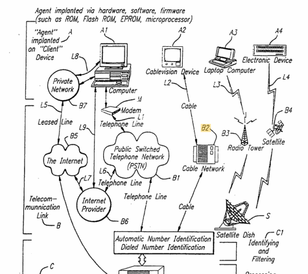
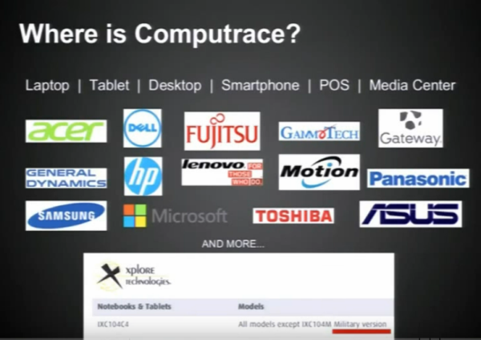
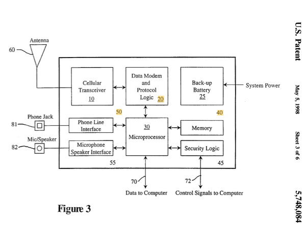

Commands to persistent agent might be transmitted through SS7 network, imho.
Scientology in Ukraine very "love" you, after getting access to police/army ability communicate with embeded agent, they rewrite some parts of firmware in memory or in PCI devices and create persistent screensharing for all local part of cult. I think is radio serial console to Management Engine ( in life i see and use at work only web panel from AMT ), access methods described in this patent. The list of Intel security technologies ( I find this info on web resources about firmware security ):
- Intel Security Security Engine, aka Management Engine (ME)
- Intel Boot Guard
- Intel Trusted Execution Technology (TXT)
- Intel Software Guard Extensions (SGX)
- Intel Identity Protection Technology (IPT)
- Intel Active Management Technology (AMT)
- TCG’s TPM
- Intel Virtualization Technology
- Intel Anti-Theft Technology
- Intel management engine BIOS extension (MEBX)
- Host-Embedded Controller Interface (HECI)
- Intel EPID (Enhanced Privacy Identification)
- Intel PAVP (Protected Audio And Video Path)
- Intel Platform Trust Technology (PTT)
“A partition of the SPI flash chip is reserved for storing the security and management engine’s non volatile data. As the flash size is very limited, the files cannot be too large. Generally speaking, the storage is intended for keys and credentials, such as device private keys, AMT passwords, and so on. It is not designed for storing bulk data such as video frames or network traffic.”
The engine includes a Dynamic Application Launcher (DAL). One thing that jumped out to me about the ME is that it runs Java code from the hard drive! After spending a lot of time explaining why ME is isolated and secure from third-party code, the author mentions two ME limitations: not enough space on Flash for more ME-based firmware apps, and inability of third parties to use the ME.
“To address these drawbacks to some extent, newer versions of the security and management engine firmware include a module called the Dynamic Application Loader, or DAL for short. As indicated by the name, the DAL allows the engine to dynamically load and execute Java applets at runtime. The applets are not stored on the flash, but on the host’s hard drive. With the DAL, the embedded engine is no longer a closed-door realm. The engine is now open to more flexibility and possibilities to be explored.”
“The DAL is essentially a Java virtual machine that enables the operation of Java applets in the security and management engine’s firmware environment. The Java applets in bytecode implement their designed functionalities that can be executed in the firmware.”
“Depending on product, the IPT may be implemented as an applet for the engine’s DAL feature, or a native firmware module on the engine. If the firmware supports DAL, for example, on most Intel Ultrabook models, then the IPT implementation will be distributed in a Java applet. On certain smartphones and other products where the DAL is not built into the engine’s firmware, the IPT will be a native firmware ingredient that is loaded from the system’s flash chip. The firmware design and functionalities of the IPT component are identical for both variants.”
And all this set realized for IT Business needs.
And when cybercriminals maintain this access, they can very quickly find the opportunity to rewrite some parts of the machine's firmware at any time and create new wireless and cable connections, remote wireless access to the webcam, screen, hard drive, memory. etc.
But in some computers there is one bad thing - Police access, I have never seen it used for anything other than information piracy:
Research about this:
https://www.blackhat.com/docs/us-14/materials/us-14-Kamluk-Computrace-Backdoor-Revisited-WP.pdf
https://ebrary.net/24869/computer_science/secure_technology https://freundschafter.com/research/about-amd-trustzone-amd-platform-security-processor-psp-amd-secure-technology/ https://www.phoronix.com/news/AMDGPU-Secure-Display-Patches